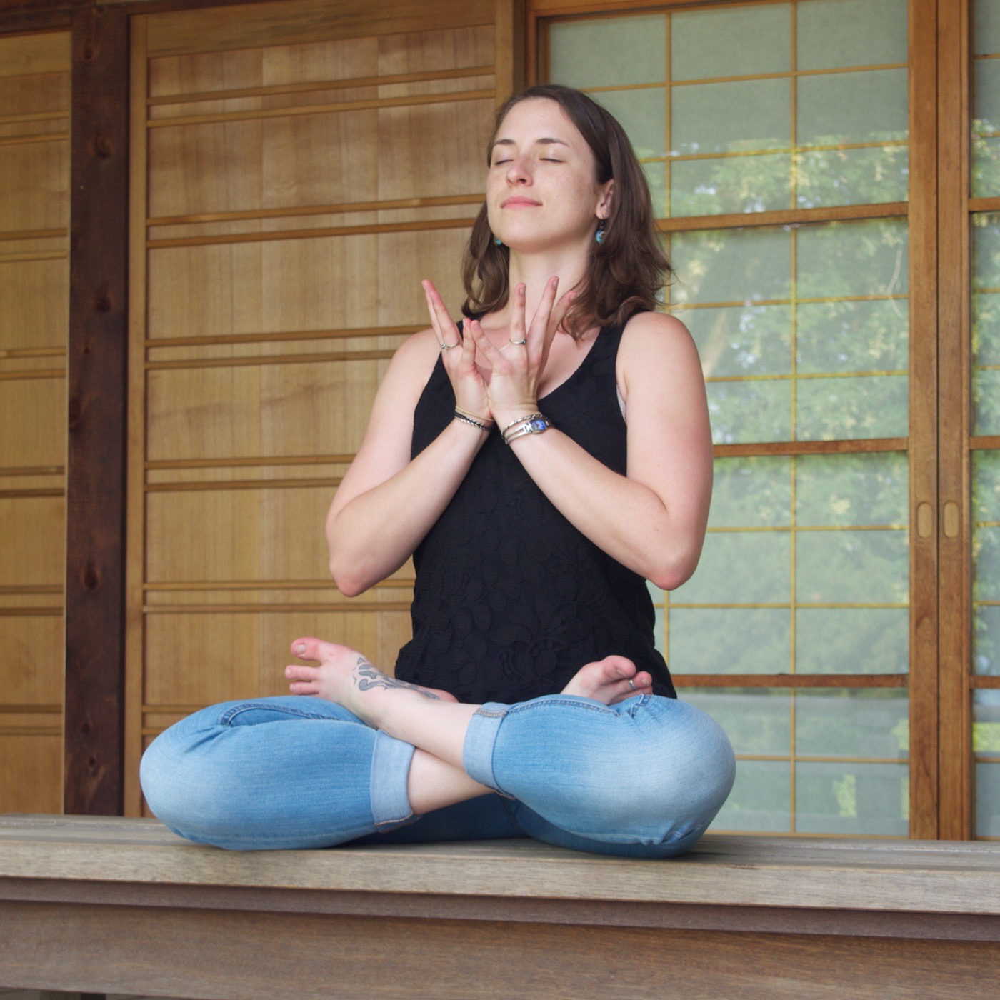
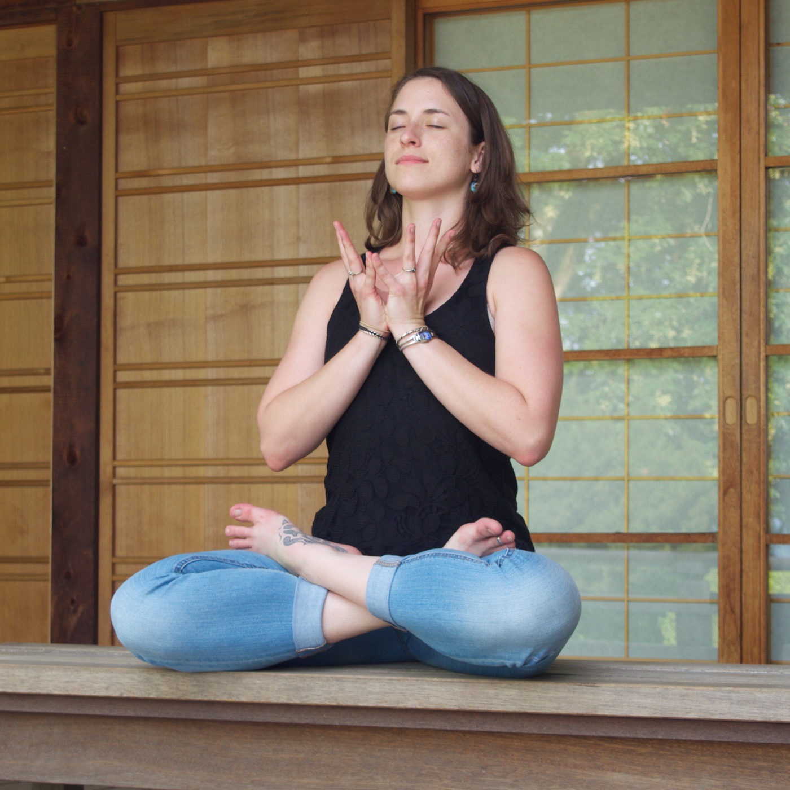

Welcome! Jai Bhagwan! Kate Crowgey is a physical therapist, yoga instructor, and mindfulness teacher based in Asheville, NC. As a physical therapist and a yogini, Kate integrates principles of Western anatomy, physiology, and movement science with the teachings of Kripalu yoga and Ayurveda to facilitate healing and holistic wellness for the mind, body, and soul.

 
